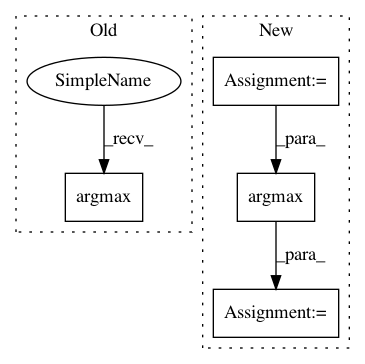

e3f85d146653691809ce1a38388c3f199dbe6e7d,libact/query_strategies/uncertainty_sampling.py,UncertaintySampling,make_query,#UncertaintySampling#,13
Before Change
elif self.method == "le": // default : label entropy (most commonly used)
// XXX divide by zero?
ask_id = np.argmax(-np.sum(self.model.predict_real(X_pool)
* np.log(self.model.predict_real(X_pool)), 1))
else:
raise ValueError(
"Invalid method "%s" (available choices: ("lc", "sm", "le")"
After Change
// -np.sum(..., axis=1) -> O(NK)
// np.argmax(...) -> O(N)
// therefore, total time complexity = O(NK)
prob = self.model.predict_real(X_pool)
ask_id = np.argmax(-np.sum(prob * np.log(prob), 1))
// ask_id = np.argmax(-np.sum(self.model.predict_real(X_pool)
// * np.log(self.model.predict_real(X_pool)), 1))
else:
In pattern: SUPERPATTERN
Frequency: 3
Non-data size: 4
Instances
Project Name: ntucllab/libact
Commit Name: e3f85d146653691809ce1a38388c3f199dbe6e7d
Time: 2015-03-03
Author: iamyuanchung@gmail.com
File Name: libact/query_strategies/uncertainty_sampling.py
Class Name: UncertaintySampling
Method Name: make_query
Project Name: librosa/librosa
Commit Name: e843dc7c9b240266f411f30d90d05b9e7c81215d
Time: 2015-01-06
Author: brian.mcfee@nyu.edu
File Name: librosa/util.py
Class Name:
Method Name: match_intervals
Project Name: yahoo/TensorFlowOnSpark
Commit Name: 981e4266d4ea816b08a762193bd52f40cd1a3242
Time: 2019-08-07
Author: leewyang@verizonmedia.com
File Name: examples/mnist/keras/mnist_inference.py
Class Name:
Method Name: inference